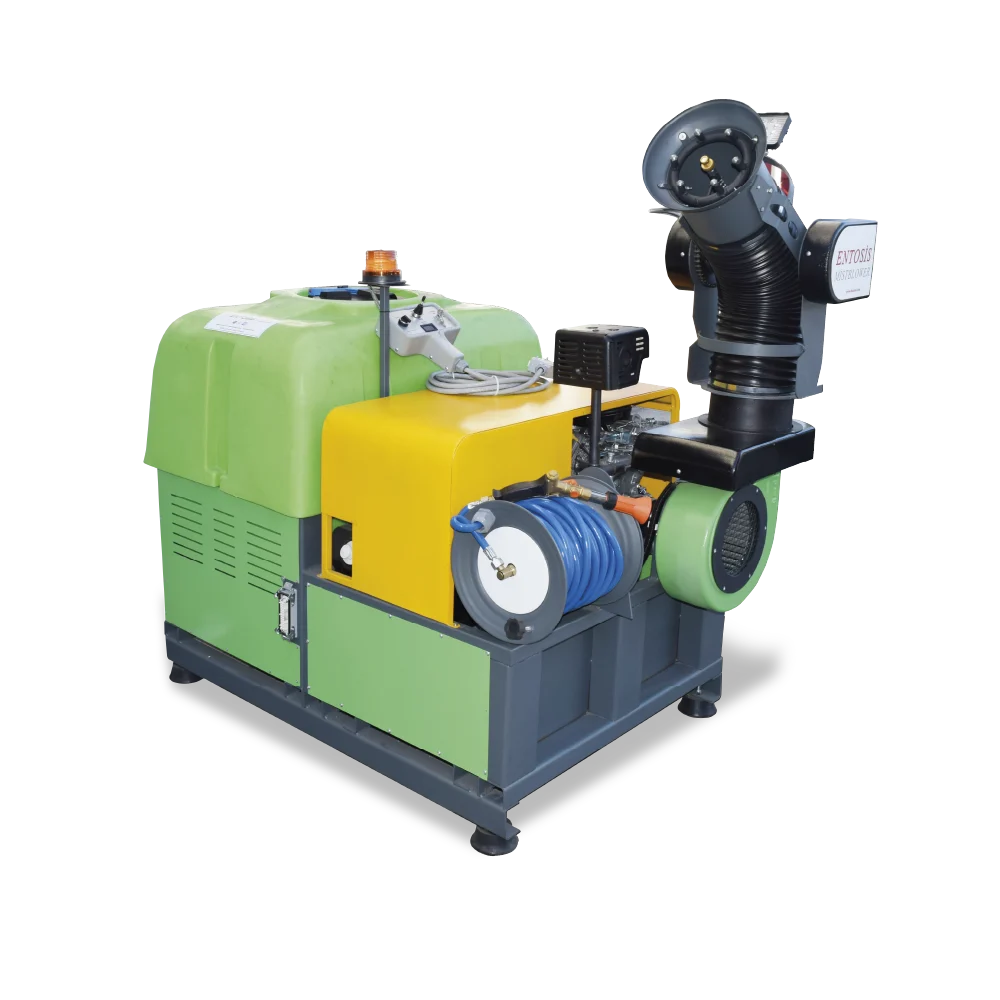
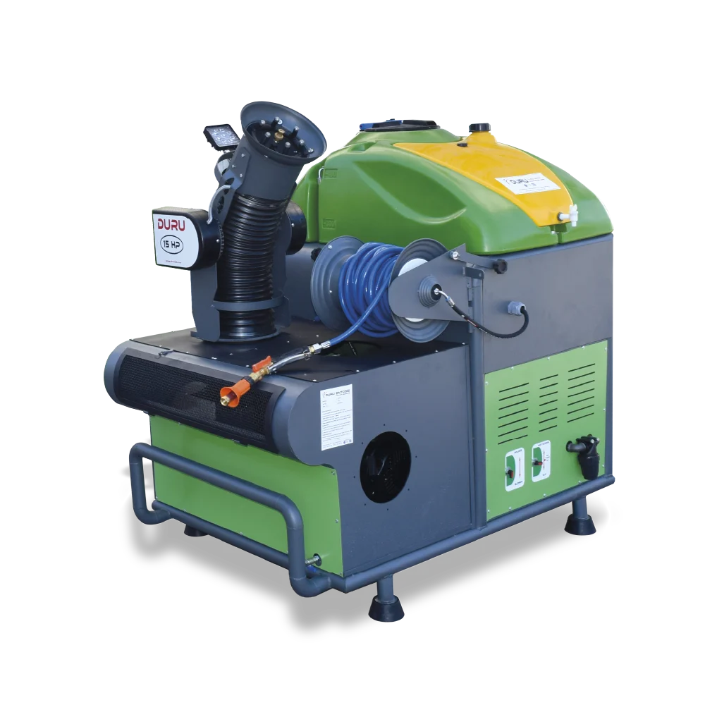

Araç Üzeri · Model DMB-15HP-400
Duru Mist Blower 15HP (400L)
400 L tank, 15 HP motor, araç üzeri profesyonel mist blower
Motor: 15 Hp Amerikan motor
Batarya: 12 V DC – 60 Ah
İlaç Tank Kapasitesi: 400 litre
Püskürtme Sistemleri: Mist blower – ULV – Pulverizatör
Teknik Özellikler
Duru Mist Blower 15HP (400L) — teknik tablo
| Motor | 15 Hp Amerikan motor |
|---|---|
| Batarya | 12 V DC – 60 Ah |
| İlaç Tank Kapasitesi | 400 litre |
| Püskürtme Sistemleri | Mist blower – ULV – Pulverizatör |
| Holder Hortum | 30 metre |
| Pompa | 14 litre / dakika, 150 bar |
| ULV Mikron | 35 |
| Ağırlık | 340 kg |
Neden bu model
Detaylı açıklama
Araç Üstü Sisleme Makinesi Nedir?
Pick-up veya kamyonet kasasına monte edilerek geniş açık alanlarda yoğun sisleme yapan bu araç üstü sisleme makinesi, Duru ürün ailesinde Duru Mist Blower 15HP model adıyla satılır. 15–18 Hp Amerikan motor gücüyle çalışan cihaz, 400 litrelik ilaç tankı, joystick kontrollü mist blower başlığı ve 6+1 nozul sayısıyla hem mist blower hem ULV hem de pulverizatör modunda çalışabilir. 35 mikron sabit damlacık çapı ve dakikada 14 litre, 150 bar basınçlı pompası sayesinde geniş alanlara uzun menzilli ve yoğun bir sis bulutu gönderir. 340 derece sağa-sola, 210 derece yukarı-aşağı dönebilen başlık hareketi, tek bir operatörün aracı durdurmadan farklı açılardan ilaçlama yapmasına imkân tanır.
Mist Blower Makinesi Nerelerde Kullanılır?
Bu tip araç üstü mist blower makineleri; ağaçlık alanlar, parklar, mesire yerleri ve uzun menzilli bölgelerin ilaçlanmasında kısa sürede güçlü sonuç verir. Sokak ve caddelerde sivrisinek ve karasinek mücadelesinde yüksek başarı oranı sağlar; isteğe bağlı 30-50 metrelik holder hortumu ile larva mücadelesinin temelini oluşturan noktasal uygulamalar (kanalizasyon, foseptik çukuru, çöp konteyneri ilaçlaması) da yapılabilir. Açık alanlarda, belediyelerde, askeriyelerde, sitelerde, çiftliklerde, tüm kamu kurum ve kuruluşlarında, halka açık yerlerde, yeşil alanlarda, depo ve antrepolar gibi geniş alanlarda kullanılabilir. Sinek ve sivrisinek mücadelesinde araç içinden tek bir operatör tarafından kumanda edilebilen bu sistem, Dünya Sağlık Örgütü ve T.C. Sağlık Bakanlığı tarafından tavsiye edilen ULV ilaçlama prensiplerine uygun çalışır. Tarım arazilerinde, meyve bahçelerinde ve büyük ölçekli sera komplekslerinin çevresinde de zararlı haşere popülasyonunun kontrol altına alınması amacıyla tercih edilen bir araç üstü sisleme makinesidir; ormanlık alanlarda kene ve diğer vektörlerin yoğun olduğu dönemlerde de etkili bir mücadele aracı olarak kullanılabilir.
Teknik Üstünlükler: Neden Duru Mist Blower 15HP?
400 litrelik geniş ilaç tankı, tek dolumla uzun bir güzergahın ilaçlanmasını mümkün kılar — bu da belediye ekiplerinin saha verimliliğini doğrudan artırır. 6+1 nozul yapısı, hem yoğun sisleme hem de hassas püskürtme arasında esneklik sağlar; 30 litrelik yakıt deposu ve saatte yaklaşık 4 litrelik yakıt tüketimiyle, cihaz uzun çalışma sürelerinde dahi ekonomik kalır. 360 kg ağırlığındaki cihaz, araç kasasına güvenli şekilde monte edilebilecek ölçülerdedir (En: 105 cm, Boy: 150 cm, Yükseklik: 170 cm). Duru U.L.V. Teknoloji Sistemleri'nin 36 yıllık üretim tecrübesiyle geliştirilen bu model, metal olmayan, elektrik kaçağı yapmayan özel başlıklara sahiptir ve sc, ec, wp formülasyonlu tüm ilaçlarla uyumlu çalışır. Cihaz, uluslararası testlerde %99,999 etkinlik oranıyla belgelenmiş Duru ULV teknolojisini taşır ve CE, TSE ile ilgili bakanlıkların talep ettiği resmi belgelere sahiptir. 15 litrelik el yıkama tankı, operatörün saha koşullarında hijyen ihtiyacını karşılarken, joystick kontrollü başlık hareketi sayesinde aracı farklı yönlere çevirmeden geniş bir alan taranabilir — bu da hem zaman hem de yakıt tasarrufu sağlar.
Araç Üstü Sisleme Makinesi Fiyatı ve Teklif Süreci
Duru Mist Blower 15HP'nin fiyatı, araç tipinize, kullanım sıklığınıza ve sipariş adedinize göre değişebileceğinden web sitemizde sabit bir fiyat listesi paylaşmıyoruz. Belediyenizin veya işletmenizin ihtiyacına özel, güncel bir teklif almak için "Teklif Al" formunu doldurmanız yeterli; talebiniz aynı iş günü içinde değerlendirilir. Bu modeli Entosis Mist Blower (500L) gibi diğer araç üstü modellerle karşılaştırarak ihtiyacınıza en uygun kapasiteyi seçebilirsiniz.
Kullanım Alanları
Bu model nerede tercih ediliyor?
Belediye
Hastane
Sera
Fabrika
Askeriye
Çiftlik
Sıkça Sorulan Sorular
Hızlı yanıtlar
Pick-up kasası veya kamyonet üzerine, uygun bir platform/şasi ile monte edilecek şekilde tasarlanmıştır.
400 litre olup, geniş güzergahların tek dolumla ilaçlanmasına imkân tanır.
Başta sivrisinek ve karasinek olmak üzere uçan haşerelerin kontrolünde, ayrıca larva mücadelesi amaçlı noktasal uygulamalarda kullanılır.
Duru ürünleri 2 yıl cihaz garantisi ve 10 yıl yedek parça garantisi ile satılır.